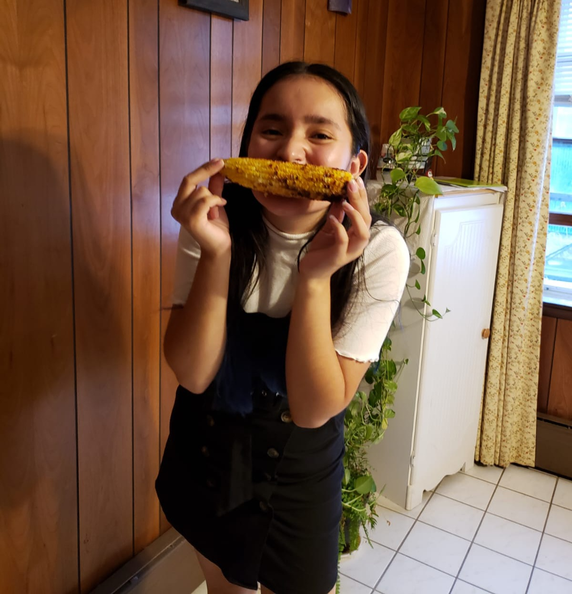
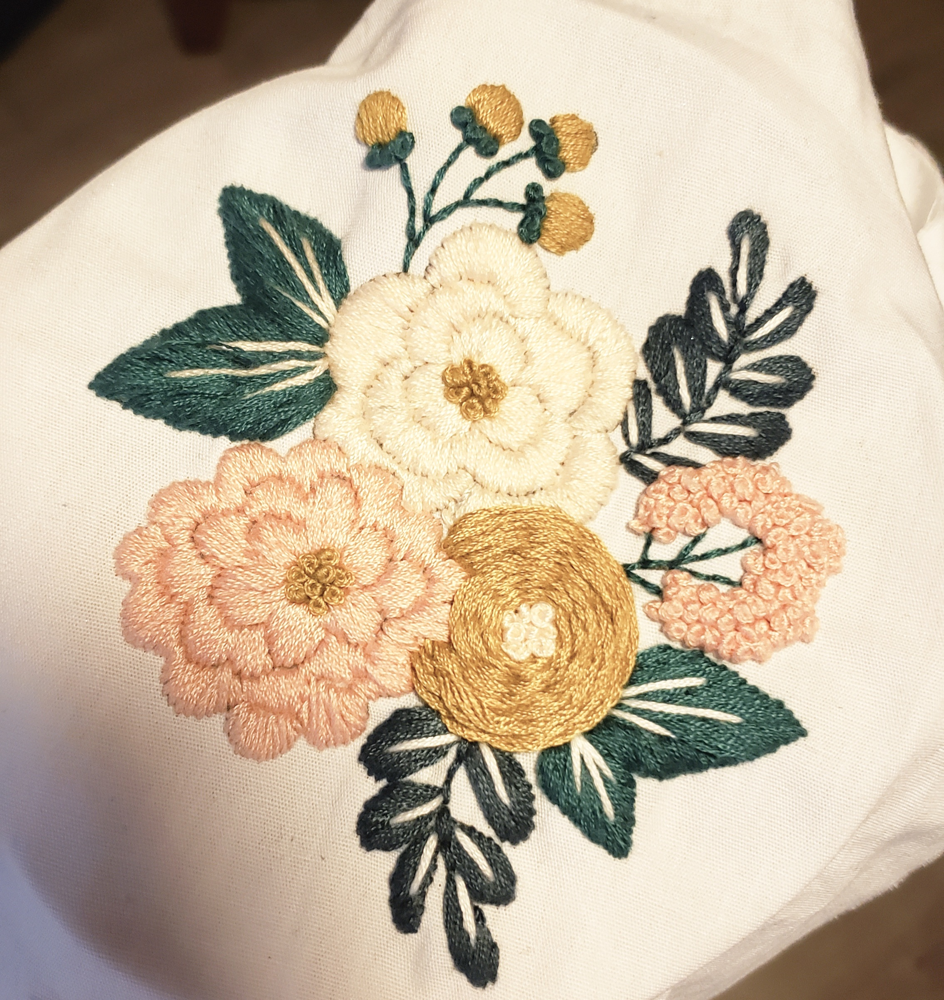
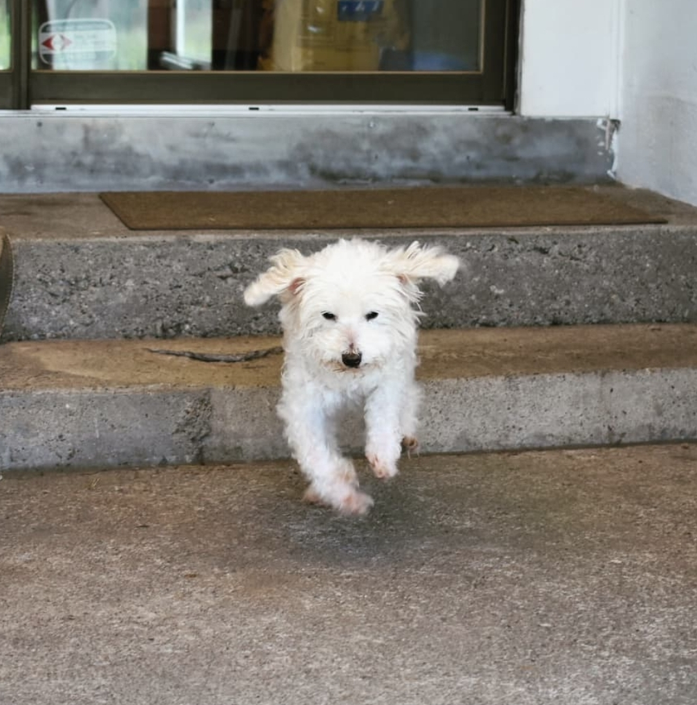

|

| 
|
About Me
 Hello! My name is Gio Chavez and I'm a freshmen art major at URI .
Additionally, I am a proud Mexican-American. The image of myself included in the banner above is actually a self portrait I drew.
In the graphite drawing, I am eating a pomegranate in a strange pose. Oddly enough, pomegranates are a symbol that often appear in my art work.
 My interest are drawing, embroidery, crochet, and I am learning to
roller skate. Although I am still not very good at embroidery, I still enjoy it a lot because it reminds me of my family.
A fun fact is that I am a saggitarius and my chinese zodiac is the horse.
 I also have a pet dog. His name is Peluchin and he is a toy poodle.
This year he will be turning 18! One of his favorite snacks is little pieces of tortilla.